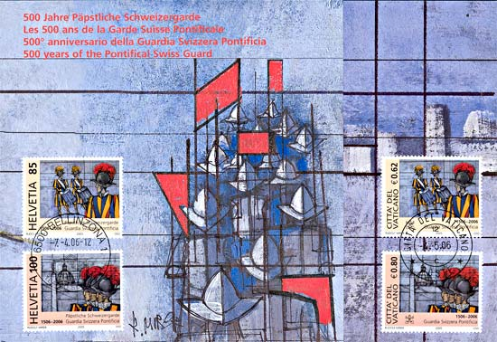
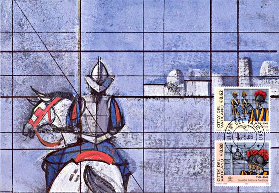
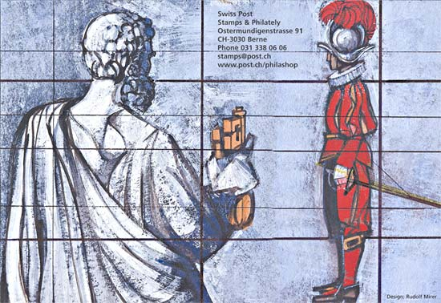
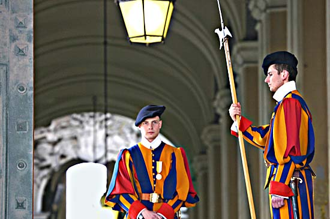
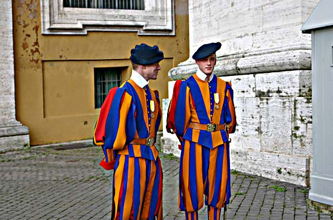

The Swiss Papal Guard 500 Anniversary
March from Bellinzona to Rome (1505 - 1506)
In 1505, pursuant to a treaty was signed between Pope Julius II and the cantons of Zurich and Lucerne, Julius requested that the two cantons send soldiers to Rome to protect him. The Guard departed at the end of 2005, under the command and Kaspar von Silenen as Commander-in-Chief, together with Peter von Hertenstein, a papal go-between. They arrived on January 21, 1506, and were taken into service with a papal blessing in St. Peter's Square.

Even though it was winter, it is assumed that the Guard marched over the Gothard Pass till Milan, The pasage of the first contingent through Milan is documented. They continued on over the Cisa Pass to Siena, Acquapendente and Viterbio on their way to Rome. The route is know as the "Via Francigena" -- the Route of Franks.

Members of the Swiss Guard started on April 7, 2006 a ceremonial march from Switzerland to Rome, retracing the route followed by the original members of the Vatican corps, beginning a 440-mile hike that took them across the Alps to Italy. They arrived in Rome on May 4, just in time for the annual ceremonies at which new recruits are sworn in to the Swiss Guard at the Vatican on May 6. Although the march from Switzerland followed the route that was taken by the first recruits in 1506, the timing of the year 2006 march was different.

The Swiss PA commemorated the 500 old march to Rome, and documented the commemoration march of 2006 by issuing a combi-folder. This folder features the two Swiss stamps issued in 2005 and cancelled in Bellinzona on April 7, 2006 and the two stamps issued by Vatican also in 2005 and cancelled at Citta del Vaticano on May 4, 2006.

The artist and former Papal Guard Rudolf Mirer, who designed the 500 years Swiss Guard anniversary stamps, is also the author of this nice folder, that is presented above on three successive images.

Both photographs of the Swiss Guards were taken by the author of this site in March 2006.
Link: Swiss Guard 500